The moment I saw the familiar sadness in my mother's eyes as she looked out over the land she helped her grandfather farm, my experience of being a daughter of Istrians -- and more specifically, Istro-Romanians -- crystallized. Tears came to her eyes as she looked upon the topola (poplar) trees her grandfather had planted with his son when he was a young boy (note that all non-English words used are Croatian unless otherwise specifed). The trees had brought her grandfather solace, she said, after his beloved son was killed in an act of mistaken identity at the end of World War II. He was only 17 years old.
My mother was from Nova Vas, a small town graced by the church Sveti Duh (Holy Spirit) and shadowed by the storied Učka mountain. The main town, Šušnjevica, lay just north. A few kilometers away is Brdo, where my father comes from.
Though the driving distance between the two towns is only about 15 minutes, my parents had never laid eyes on each other -- much less been to each other's towns -- until they met in their late teens in Brooklyn's Prospect Park. When they were small children growing up in war-torn Istria, their people had no cars and few horses, no electricity or running water, no telephones. People got around primarily on foot or perhaps a wagon pulled by cows or oxen.
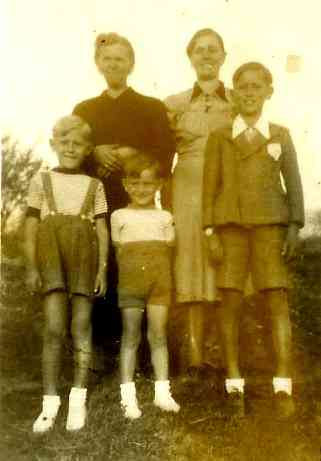 At our dinner table growing up, stories of Istria were told almost nightly, and Istrian customs and food were part of our daily lives. We ate polenta, menestra (soup with beans, vegetables, potatoes, pork and saurkraut), kobasice (sausage), cabbage and potatoes and eggs with asparagus; we were given chamomile tea when we were sick and sometimes a taste of rakija (alcoholic drink made from grapes; akin to Italian grappa) when it was very cold out. We had palachinka (crepes) for dessert. We listened to Istrian music in the house and my parents spoke Istro-Romanian to their friends, relatives and to each other -- especially when they didn't want my brother and me to understand (I understood though!).
As a child growing up in Brooklyn, NY, my first language was Istro-Romanian and even as I transitioned to English, I continued to say my prayers in Istro-Romanian. Though English was mixed in with Istro-Romanian, it wasn't until we moved to Long Island, when I was four-and-a-half, that it became my primary language.
I always got a sense my parents were happy when they lived in Istria -- probably because they talked about it so much -- though more often than not, their stories were terribly sad. They always seemed be about wartime, strife and tragedy, extreme poverty and sacrifice, cold winters, hot summers with little water, not enough food, fear and ignorance. But through it all was a vision of beauty and almost mythological adventures. Tall mountains -- especially Učka -- loomed, life-and-death situations occurred regularly, acts of heroism, these unbreakable bonds between people, forgiveness and open-heartedness, and, of course, the dream of the Adriatic.
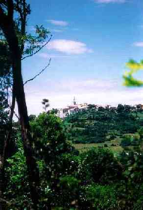 The Istria I encountered on my first trip there in 1998 was a much different place than it was in the 1940s and '50s. Modern conveniences could be found in most towns -- though my aunt living in Nova Vas still had no indoor bathroom. Tourism was a quickly burgeoning industry and many shopkeepers and businesspeople spoke English, though Croatian, German and Italian prevailed. I was unprepared for the beauty of my parents homeland, but in retrospect I shouldn't have been.
I have learned about Istria and the Istro-Romanian people through a mixture of fact and folklore. On our large family trip in '98, I discovered that this combination has been fitting, as our tour guides described the history of the towns and region in the very same way. I realized then that my vision of Istria was the right one for me and seemed most fitting for a place ruled by numerous countries and factions throughout its history.
The Ciribiri
Given the name Ciribiri by their Croatian neighbors, the people from Žejane, which lies north of the Ćićarija Mountains, and those from towns further south, on the western slope of Mount Učka near the shores of what was once Lake Čepić are known in linguistic and historical circles as Istro-Romanians. They have been referred to as Istrian Vlachs as well, denoting the belief that they originally descended to the area from the Wallachia region of Romania. Though early history is difficult to pin down, it is now commonly believed that the Istro-Romanians ultimately came to the area they are now settled in from northern Dalmatia, probably in the 14th or 15th century.
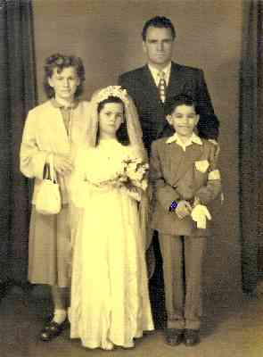
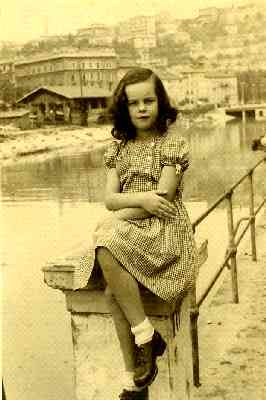
Istro-Romanian is still used in the towns of Šušnjevica, Nova Vas, Jasenovik, Koštrčani, Letaj and Brdo, though not by many younger people anymore. But as many people from inland Istria continue to migrate toward coastal areas and cities -- coupled with the Diaspora after World War II -- fewer and fewer Istro-Romanian speakers remain, now rendering the language seriously endangered according to the UNESCO Red Book on Endangered Languages. Estimates cite fewer than 1,000 speakers worldwide, with some believing the number of speakers is 500 or less.
In 1999, Marijan Milevoj, a journalist living in Labin, speculated that there were more Istro-Romanians living in New York than in Istria. Zvjezdana Vrzić -- a Croatian linguist and visiting scholar in the Department of Linguistics at New York University -- estimates there are 200-300 Istro-Romanian speakers living in New York City, with small populations also living in Cleveland, OH, Florida, Canada, Australia and New Zealand. In the New York City Ciribiri enclaves -- Brooklyn, Astoria and Manhattan -- Istro-Romanian is still spoken.
Istro-Romanian, Istrian Vlach, Ciribiri are just some of the terms used to describe the language and people. Some of my relatives say they speak "Po Nasu" (in our language); others call it Vlashki. Still others refer to themselves by the towns they were born in. In my reading, I've also come across the terms Cici, Vlasi, Vlahi, Ciribirici and Rumuni.
Some years ago when I was in college, I shared a house with a young woman from Romania. When my parents came for a visit, they found they could easily communicate with her and many of the words they used -- hers in Romanian, theirs in Istro-Romanian -- were the same or very similar.
Of the four Romanian dialects, Istro-Romanian has the fewest speakers left. It is followed by MeglenoRomanian, with more than 10,000, Aromanian with more than 100,000 and finally DacoRomanian -- the principle Romanian language-- which has upwards of 26 million speakers today.
There is a serious movement under way by linguists, lay people and scholars to preserve and document the Istro-Romanian language and culture before its few native speakers are gone. Vrzić is in the process of applying for a grant from Yale's Endangered Language Fund to continue work on a digital archive she has begun in an effort to learn about and preserve the language.
Reunion in Brdo
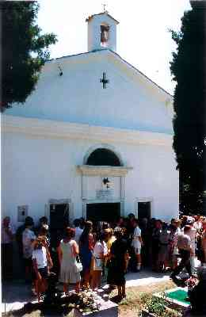 On our family trip in 1998, there were about 30 of us spanning three generations. There were parents, grandparents and children, cousins, siblings, spouses and a few friends simply interested in the journey.
Though we toured all of Istria during our two-week stay, the timing of our trip was set to coincide with a large reunion in Brdo (which means the "hill), which centered on the re-opening of the restored tower and church of St. George (Sveti Juraj). A fund was established--with many in New York contributing -- to restore this dilapidated but beautiful church first built around 1622.
About 500 people from around the world came to the reunion and in fact, a new road was paved to make passage easier for reunion goers. A long mass, with special prayers for the deceased, took place inside. Afterward, a party, complete with accordion and trumpet playing, dancing, singing Istrian and Croatian songs, ensued. Food and drink were plentiful with local dishes, such as the favorites cevapcici (minced, spiced meat) and raznjici (a type of shish kebob) available.
As it was before the exodus of the mid 20th century, the church was the central gathering place for the town's people and visitors. As we climbed to the top of the bell tower and looked out over the magnificent vista of mountains and small towns, I listened to my father and his brother reminisce about their boyhood days. As they looked out over the mountains, they talked of bringing food to the workers laying railroad tracks after World War II and how their father used to ride his bicycle to Labin – probably well over 25 kilometers -- to work in the coalmines. They spoke proudly of the different types of fruit trees they had -- plums, figs, apples, cherries. Their town was known for its abundance of fruit.
They talked about their lives as boys with great pleasure, though at other times I can remember my father telling terrifying tales of children being killed or injured by mines and ammunition left behind after the war, the countless times Tito's Partisans tried to intimidate my grandfather and other village men into joining their ranks during the war and the harsh existence they led as a family trying to make do during very lean times when food and water were often scarce.
At the time of our visit, only two inhabitants remained in Brdo: a brother and a sister. On the drive from Opatije -- the resort town we were staying in, located between Rijeka and Mt. Učka, on the Kvarner gulf of the Adriatic--, we saw a number of small chapels on the side of the road. These "kapelitsa" are usually financed by individuals or families, often as a way of giving thanks. We also visited my father's house, which, like so many in the region, had long been empty.
Noselo/Nova Vas
A few days after the Brdo reunion, we took our first trip to Noselo/Nova Vas, the town my mother's family is from. The town's sign lists both names; the former of which is Istro-Romanian and the latter Croatian.
Noselo was more populated than Brdo, and the house in which my mother grew up, now the home of my grandmother's sister, my great-aunt Franka. She has since passed away, but she seemed comfortable in the house and had neighbors who checked in on her.
The house had electricity, but no running water or bathroom. There was an outhouse and a hose outside rigged to a faucet. Her kitchen was modern compared to the rest of the house, with contemporary appliances, a linoleum floor and kitchen table.
A special treat I'd been looking forward to was the home-cured prosciutto and sheep cheese. Behind the kitchen was a dark, dry room where the meat hung and it was better than any I've tasted in the states.
Though the house hadn't been used as a farm in many years, the barn was being used by some local people to keep turkeys. And next door a man kept dogs trained to find truffles, which are fairly common in the area. In fact, eating truffles while in Istria -- while it felt like a luxury -- was a not such a big deal to the local people.
It was very moving to be at this place with my mother. She spoke of her life here so often and so eloquently -- the picture she painted of her days as a girl was so vivid and, and I had always longed to visit it.
After we ate lunch, we toured the house, number 36 in Nova Vas. Like most houses in Istria and much of Croatia as well, my mother's had a nickname: Matela. (Yadrina was the nickname of my father's house). I don't know what it means or where it came from, but house names were important identifiers in the Istro-Romanian community. My grandmother was so well known as Maria lu (from) Matela, that we included it on the stone that marks her grave.
House names could have derived from a number of places. They could be a name of a previous owner, they could indicate something about the family -- such as a profession--, or the place they originally came from.
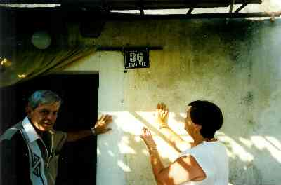 We toured the small house. My mother showed us the bedroom where she and her grandparents would huddle in one bed during the coldest winter months, the mattress stuffed with cornhusks. We walked up to the attic -- now overtaken by bats -- where she sometimes sought shelter during the war.
We walked outside on the baladur (sic-balcony), which overlooked the mountains. We went inside konoba (the cellar) where food was stored and then we walked down a path to the barn where -- because of its size -- Germans, Italians and Partisans all made their camps at one time or another during the war. I remembered a story about my great-grandmother nursing a sick German soldier, despite the danger to her own well-being. My mother told of her grandmother saying that she hoped that some mother would pity her own son if ever he needed it.
Finally we looked out over lug; the farmland that belonged to Matela, which my mother and grandmother helped farm and the pasture to which the cows were taken to graze. It seemed almost surreal to me that my parents -- so modern, so American -- had this other life.
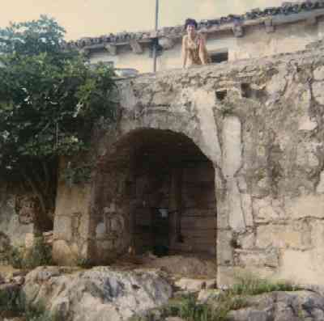 On a second trip to Nova Vas, we went to the church, Sveti Duh (Holy Spirit). It is a small but beautiful church with a fresco of the three kings on its north wall. The Turisticka Zajednica Opcine Kršan Web site (http://www.Kršan.hr/tz_eng/) lists Blaz, an artist from Dubrovnik, as having created the fresco sometime in the 16th century. Kršan is a township encompassing Nova Vas, Šušnjevica, Brdo and a number of other hamlets or villages and is located in the county, Labin.
Growing up my mother spoke of Sveti Duh often. She spent a lot of time in the church and became friends with the priest who presided over it. During her early youth (she was born in 1941), school and education were in turmoil because of the war, and books were hard to come by. But she would join the priest in reading old newspapers he would save after food -- which was often wrapped in newspaper -- would be delivered to him.
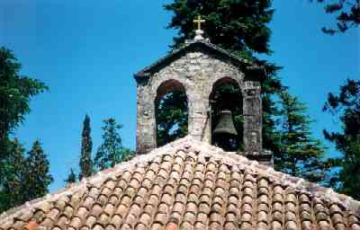 In my grandmother's day (she was born in 1920), education was even harder to come by. She always regretted that she only got through the sixth grade. My grandmother had an insatiable intellect and often went to great lengths to disguise her intellectual pursuits. She told stories of climbing trees to listen to operas when they came to the region and of being punished when she was discovered reading a forbidden book of the times -- "The Garden of Allah" by Robert Hichens.
In the Sveti Duh churchyard was a small, well-maintained cemetery with remains of many of our relatives laid to rest. We -- as all loved ones who visit the cemetery do -- tended to the graves of our kin, weeding, sweeping and arranging flowers.
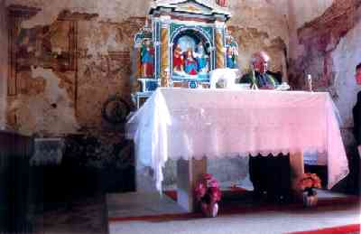 Buried there are my great grandparents -- both born in Istria when it was still under Austrian rule. My great grandfather fought in World War I and somehow found his way home from a POW camp in Siberia after the war was over. My great grandmother was the oldest of 15 children, many of whom lived into adulthood and even old age. At the turn of the century, it was rather unusual for many children to survive.
As sad as this was to see, the most heartbreaking was the grave of my great uncle, my grandmother's brother, who was killed by Partisans just after the end of World War II. My great grandparents went to great lengths to shield him from being inducted by the Partisans -- hiding him in cellars and barns throughout the war. On his way home from his sister's wedding in nearby Šušnjevica -- the central town in the area -- he was mistaken for someone else and hit with a grenade.
Učka
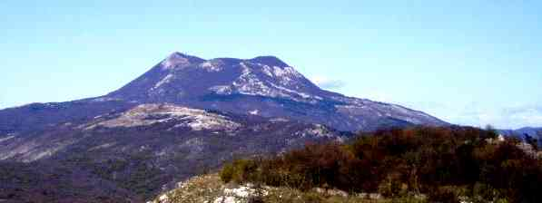
Anyone you speak to in the Istro-Romanian community will undoubtedly have a story about the great Mt. Učka. Until the tunnel through this enormous mountain -- the largest in Istria -- was constructed in 1981, Istrians often made their way over the mountain on foot. My grandmother seemed to have gone over that mountain numerous times -- even as a child -- in order to get to Rijeka to work, or to trade goods in other towns. She used to tell a story of being a young girl crossing the mountain with a friend. The friend's shoe was lost in the snow and rather than leave her there, my grandmother stayed with her. When her father found the girls, the story goes, they were close to dying from exposure.
One of the legends that talks of how the Ciribiri got their name has to do with Učka. Transformed from the Croatian phrase "cire bire" -- which roughly means "hold it well" or "hold it tight," the story has it that Istro-Romanians hauling coal over the mountain to bring to Rijeka or Trieste would be threatened by the strong winds called the "bura," blowing from Učka. The winds were so strong they could upturn carts of coal or firewood and cries of "cire bire" could be heard.
Another story claims that Istro-Romanians working on the docks in Rijeka would call out cire bire to each other to encourage the strength to hold their heavy loads.
The Exodus
The Istro-Romanians left the Šušnjevica region in vast numbers after World War II: some under cover of night and at great peril to themselves -- like my maternal grandmother and paternal grandfather -- and others more easily when the borders were opened around 1950.
My grandmother escaped from Istria in the mid to late ‘40s, fleeing to a refugee camp in Trieste. Her passage to the U.S. was a colorful one: she responded to a mail-order bride advertisement and figured she'd deal with the consequences once she arrived. Once she arrived in the U.S., she admitted to her prospective bridegroom that she had no intention of marrying him, hoping he would understand. He didn't and moved to have deportation proceedings begin. But her close-knit band of Istro-Romanian relatives in Brooklyn came to her rescue, recruiting a family friend whose parents came from Sibenik, to marry my grandmother so she could stay. The man, who was my grandfather, agreed and as luck would have it, their arranged marriage turned out to be the real thing and they remained husband and wife until their deaths.
Like many Istrian women, my grandmother became a seamstress, working in New York City dress manufacturing shops.
My paternal grandfather also escaped and came to the U.S. by boat, jumping ship in Pittsburgh, PA. He made his way to Brooklyn and, like many men from Istria, went to work in the restaurant business, starting out as a salad man and eventually becoming the chef in a restaurant he owned with his oldest son.
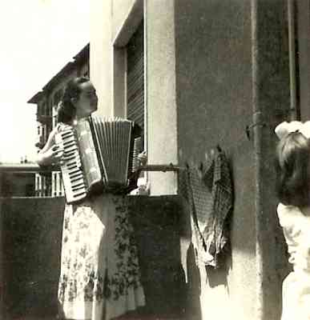 After the end of world War I, Istria had become part of Italy. During Italy's reign, most Slovenian and Croatian schools, customs -- even people's names -- were replaced with the Italian. For instance, my maternal family name had been Jurman, but during Italian rule was changed to Jurmani. Nova Vas was called Villa Nova and Brdo, Brianni. Many Istrians initially left when the Italians took over, so the area had already been depleted of much of its native population prior to the second World War.
After World War II when most of Istria was turned over to Yugoslavia, another exodus began. Many -- such as my father's family -- chose to go the Italian route and they left Brdo for Trieste (my grandfather went to the U.S. separately). In 1955, my father, his brothers, mother and grandmother, joined my grandfather in Brooklyn.
My mother's family, on the other hand, decided to stay and be part of Yugoslavia. My mother left Nova Vas at the age of around 10 to live with her aunt in Rijeka so she could get a better education. She returned to Nova Vas every summer to be with her grandparents, who remained, along with other older neighbors. My mother was a very patriotic Yugoslav and told me that, upon coming to the U.S. in 1958, she remembers giving up her "little red book" to the authorities.
Always Homesick
Though there was little question as to whether or not my parents would be leaving their devastated homeland in Istria once the war was over -- and they have always said their lives were much better here than they were in Istria -- there has always been a longing for home in both of them. In fact, the Istro-Romanian people I know seem to all have that ache.
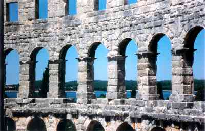On our trip in 1998, we visited parts of Istria that my family rarely -- if ever -- had a chance to see as children. The beautiful seaside towns of Porec and Rabac; the Roman colosseum in Pola; the enchanting island of Krk and the majestic hilltop town Motovun: we saw them as tourists, eating in restaurants, sunbathing on the beaches, examining frescoes and artifacts in ancient churches.
Historically, Istria always has been a place of strife, transition and upheaval. Though the Istro-Romanians have experienced those changes throughout the ages, they have managed to preserve much of their own unique culture. Today it seems Istria is stable and its beautiful towns and proud people are working hard to cultivate its existing gifts…its natural beauty, its talented people and its historical treasures that have been hidden in the turmoil.
Though the Istro-Romanian community is small, its spirit is great and its people undaunted. Through the sincere efforts of people around the world to preserve and revive this singular culture, I believe the twinkle will remain in the eyes of the Ciribiri.
Rene Babich
March 1, 2007
© 2007 The Newsletter of the Society Fârșărotul